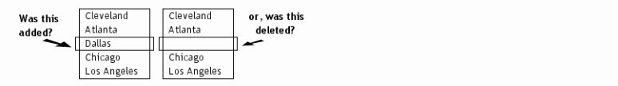
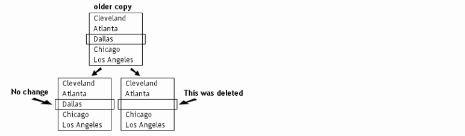

3-way Merge Concepts 
|
3-way Merge Concepts |
|
A merge session helps you combine separate sets of changes into a new version of the data, accommodating both sets of changes. Consider first a simple 2-sided comparison, where an item is on one side and not the other. The software can't tell if the item was newly added on one side, or if its pair was deleted from the other side:  However, when there is an older copy of the data available there is more information to base merge decisions on. For example, to decide whether an item was added on one side or deleted on the other, we can refer to an older copy of the data:  In this situation, the program can help you quickly and accurately combine independent modifications. This is called a 3-way merge. However, not all changes can be safely merged without careful review. If the same line has been independently changed on both sides (and the changes are different from each other) the line will be flagged as a conflict requiring manual review. |